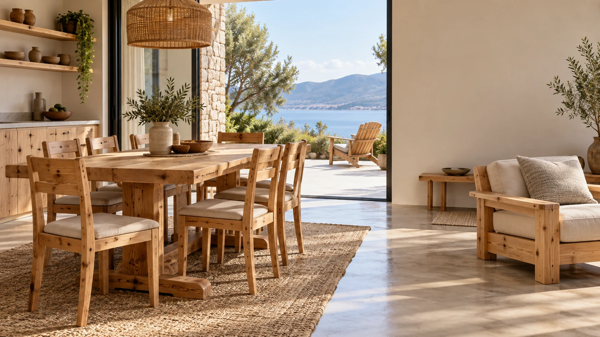
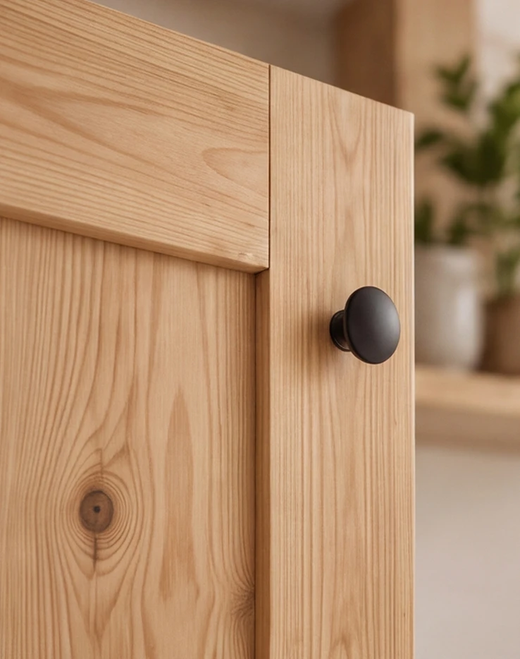
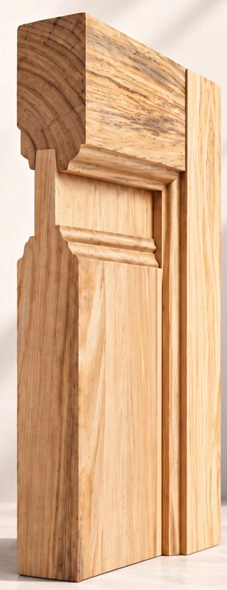
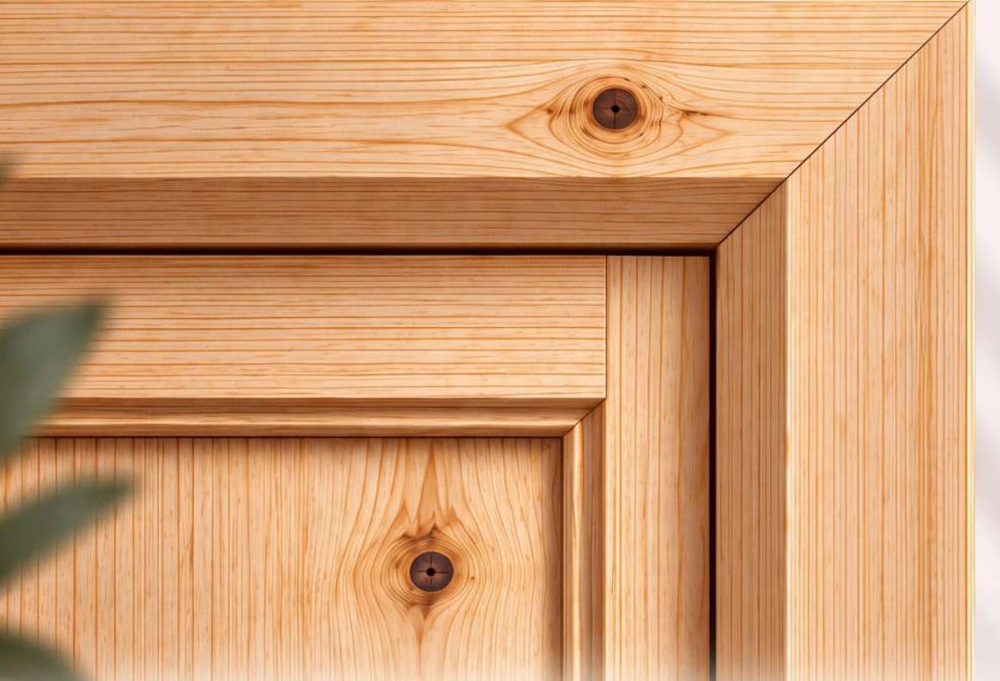
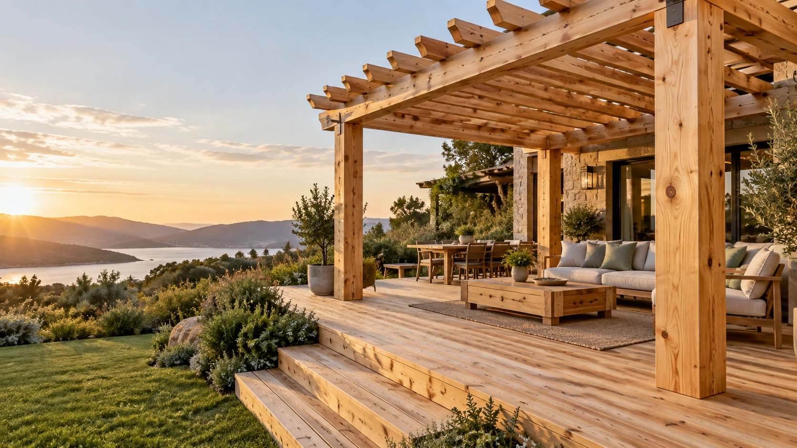
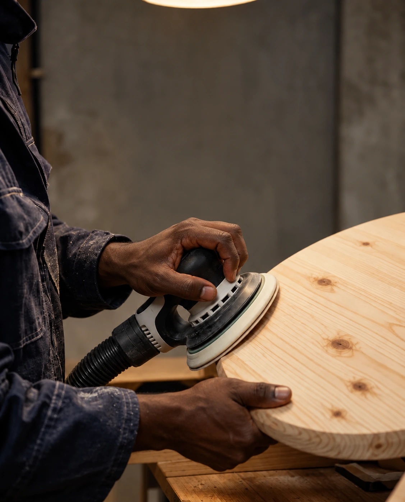
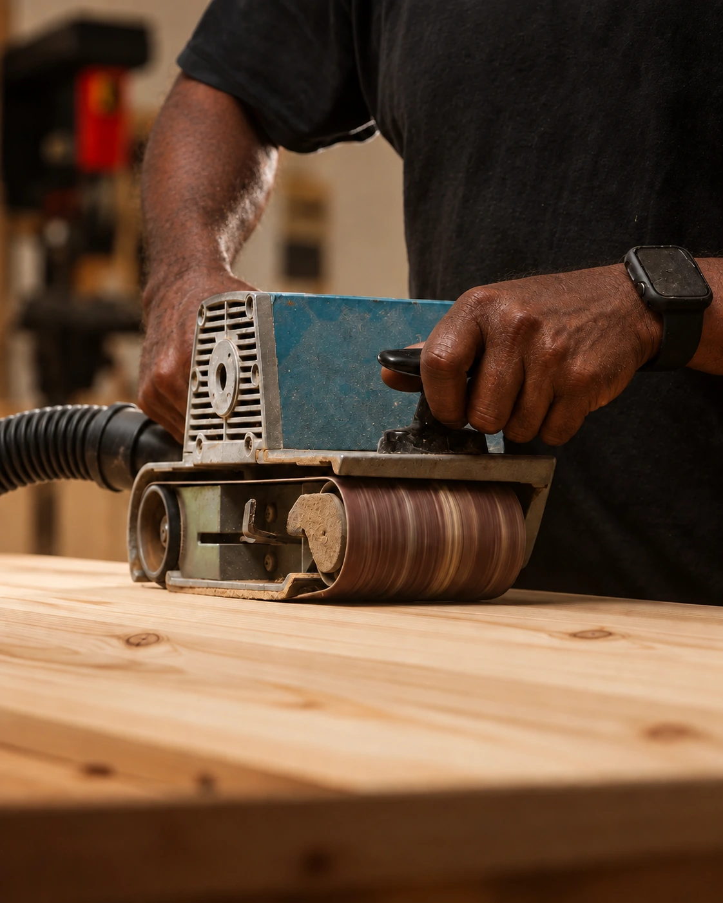
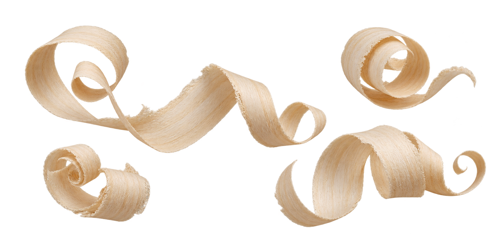

MC-1001
Half glazed
Four-light glazing, classic proportions.

Welcome to Mlango Core
THE MLANGO CORE COLLECTION
From the door you open each morning to the spaces you share with family. Discover solid pine doors, frames, furniture and timber systems, with the grain and character of real wood.

01 — THE MATERIALNATURALLY INDIVIDUAL
The knots, the lines, the subtle variations. Pine brings its own character to every surface. Explore a collection that lets the timber speak.
Get closer to the details ↗
01 / DOOR COLLECTION
Find the design that feels at home.
Talk to us about sizes and finishing options.
MC-1001
Four-light glazing, classic proportions.
MC-1002
Raised panels with a timeless feel.
MC-1003
Horizontal boards, clean lines.
MC-1004
Traditional panels, natural character.
MC-1005
A vertical opening for light.
MC-1006
Simple, bold horizontal detailing.
02 / FRAMES & MOULDINGS
Complete your door with pine frames, architraves and finishing profiles. A coordinated approach, right down to the edges.
Discuss your specification ↗THE FINAL TOUCH
Explore the catalogue’s natural pine, walnut and mahogany finish directions. Confirm your chosen tone on a physical sample before production.
Discuss a finish sample ↗
03 / SPACES TO LIVE IN
A place to gather. A corner to unwind.
Explore the wider Mlango Core collection.
The heart of the home, in natural timber.
A considered place for everything.
Warm timber. Quiet morning rituals.
Make yourself at home.
For the moments you share.
A connection between every level.
Collection visualisations · Speak to our team to confirm dimensions, materials and finishes for your project.

04 / OPEN TO THE OUTDOORS
Pergolas, timber decking and spaces to slow down.
Explore outdoor possibilities ↗05 / PREFAB HOUSING
Explore timber prefab housing concepts, from the structure to the finishing details. Share your site, space and project requirements with our team.
Start your prefab conversation ↗FROM TIMBER TO TOUCH
Care in the preparation.
Character in the finished piece.


Check the grain, knots and surface. Secure the timber before working.
Work through suitable abrasive grades, removing the previous sanding marks while keeping edges crisp.
Finish along the grain. Extract the dust and inspect the surface under angled light.
Approve the colour on a sample, then apply the chosen finish to its manufacturer’s instructions.
Illustrative pine-working sequence. Workshop imagery adapted from references.

THE COLLECTION IN MOTION
EMAIL US
info@mlangocore.co.keFIND US
Gilgil Road 14, Nairobi Industrial Area
Nairobi, 00100 Kenya